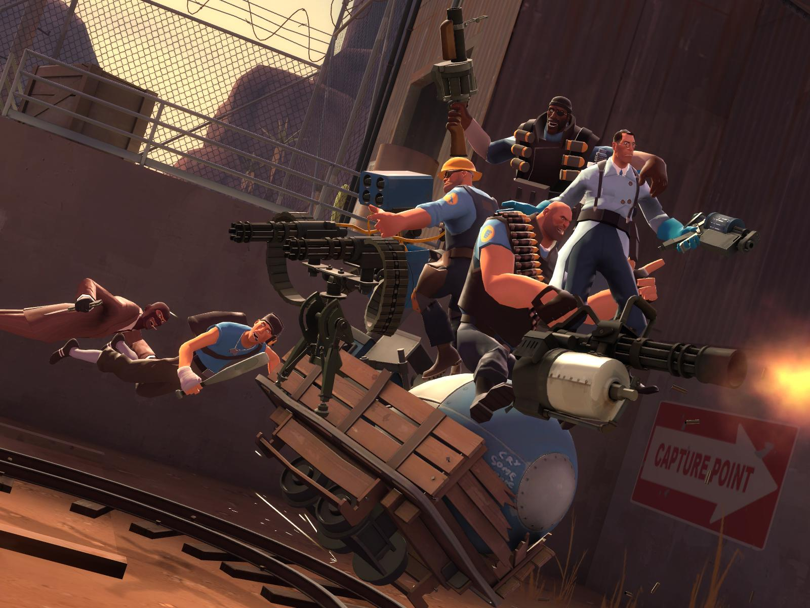

unOfficial Team Fortress 2 - Wiki
Welcome to our unofficial Wiki for the game Team Fortress 2.
This fan made online resource for Team Fortress 2 is a project developed by 3 students at the Avans Hogeschool in Den Bosch (in the Netherlands). The goal of this Wiki is to inform new or potential players about the style, gameplay and various mechanics of this game.
